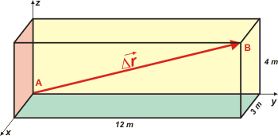
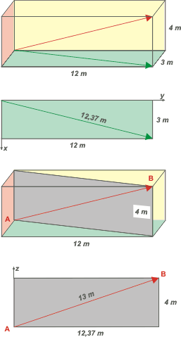

NO ME SALEN
PROBLEMAS RESUELTOS DE FÍSICA DEL CBC
(Cinemática vectorial) |
|

|
 |
1.6- Un salón de caras rectangulares tiene las
siguientes dimensiones: 12 m x 4 m x 3 m. Una
mosca parte volando de un rincón y llega al rincón
diametralmente opuesto en 6,5 segundos.
Determinar el vector velocidad media de la mosca,
y su módulo.
Desafío: Si la mosca se desplazara caminando
por las paredes a razón de 1 cm/s, ¿cuánto tardaría
como mínimo en ir de un rincón al otro? |
|
Este ejercicio es tan tonto que nunca lo resolvemos en clase, y los estudiantes suelen leer el enunciado y pasarlo de largo. Vamos a hacer una cosa: lo vamos a tratar de exprimir a fondo.
Vamos a empezar con un gráfico de posiciones que nos va a permitir definir algunas cosas. Acá está: |
|
|
|  |
Esta representación del salón no es la única posible, pero los resultados deberían ser los mismos sin importar cómo lo hagamos. Les puse colores a las caras internas de las paredes y el piso; y las paredes externas y el techo quedaron transparentes. |
|
|
|
Además puse un SR tridimensional (x, y, z) para que veas uno por primera vez en tu vida. Con él podríamos definir las posiciones inicial y final de la mosca y su desplazamiento. Una notación posible sería ésta: Coordenadas del punto A: (0; 0; 0), y las del punto B: (3; 12; 4). Así podemos representar los vectores posición:
rA = 0 m î + 0 m ĵ + 0 m k'
rB = 3 m î + 12 m ĵ + 4 m k'
î, ĵ y k' son vectores de módulo 1, se llaman versores y tienen por objeto contagiarle el carácter vectorial a un número, y decir para dónde apunta. Suelen representarse con un sombrerito o una comita arriba de la letra original . El versor î tiene la misma dirección y sentido que el eje x, el versor ĵ los mismos que el eje y, y el versor k' que los de z. (No tengo k con sombrerito, que sería lo correcto).
El desplazamiento ΔrAB se halla restando los vectores posición.
ΔrAB = rB — rA = 3 m î + 12 m ĵ + 4 m k'
La velocidad media, vm = Δr / Δt, se obtiene dividiendo cada componente (cada término) por el intervalo de tiempo correspondiente, en este caso 6,5 s.
vm = 0,46 m/s î + 1,85 m/s ĵ + 0,62 m/s k'
Sin embargo en este ejercicio los autores pretenden que obtengamos la velocidad media y eso podemos hacerlo de varias maneras diferentes; una es a la pitagórica:
|vm| = [ (0,46 m/s)² + ( 1,85 m/s)² + ( 0,62 m/s)² ]½
Otra es obtener el módulo del desplazamiento y después dividirlo por el intervalo de tiempo. O sea |vm| = |ΔrAB| / Δt. Esta me interesa desarrollarla porque te quiero mostrar cómo encontrar el valor de la diagonal principal del salón. |
|
exponente ½ es lo mismo que
raíz cuadrada |
|
|  |
Tampoco hay una única manera, pero voy a transitar un camino bastante común que nos va a llevar a una lección importante.
Mirá la diagonal en el piso (o si querés, la sombra del vector desplazamiento en el piso): podemos obtener su valor por Pitágoras, ya que esa diagonal divide el piso en dos triángulos rectángulos, donde la diagonal es la hipotenusa y los catetos valen 12 y 3 metros respectivamente. De modo que esa diagonal vale
dxy = (12² + 3²)½ = 12,37
Ahora mirá el rectángulo celeste. Lo construí vertical sobre la diagonal del piso. Su diagonal es el desplazamiento que estamos buscando. Si procedemos de la misma forma que antes, por Pitágoras... tenemos:
|Δr| = (12,37² + 4²)½ = 13
Si te fijás el resultado no es otra cosa que
|Δr| = (3² + 12² + 4²)½ = 13
O sea, un Pitágoras tridimensional. |
|
|
Si volvemos a la definición de velocidad media:
|vm| = |Δr| / Δt =
|vm| = 13 m / 6,5 s
|
|
|
|
| DESAFIO: Esta vez el desafío nos lo hace la guía de problemas, de modo que no podemos dejar de aceptarlo. Además me parece que le ganamos a la guía, porque No me salen tiene un camino más corto para la mosca caminadora. ¿Cómo lo encontré? Muy fácil: el camino más corto entre dos puntos es por la línea recta. Ya sé, las paredes y el piso están plegados, no puedo ir por una línea recta... Justamente lo que hice fue desplegar el salón, como si fuera de cartulina. |
|
 |
Es más... encontré dos caminos, los dos iguales de cortos y los dos más cortos que el de la guía.
Fijate cómo desplegué el salón. El punto B quedó repartido en dos lugares. Pero ambos quedan a la misma distancia de A.
¿Cuánto vale esa distancia? Por un simple y cualunque Pitágoras. No sé vos pero yo al menos veo dos triángulos rectángulos. Ambos tienen una base de 12 metros y una altura de (4+3) 7 metros. Por lo tanto la hipotenusa, que no es otro que el caminito que tiene que hacer nuestra mosca desalada, vale
dmín = (12² + 7²)½ = 13,89
todo en metros, por supuesto.
Δt = dxyz / 1 cm/s
Δt = 1.389 cm / 1 cm/s |
|
|
| O sea, la mosca puede caminar por el piso hasta el punto D y luego subir por la pared hasta B. O subir por la pared interior hasta el punto C y luego caminar por el techo hasta B. |
|
|
|
|
|
|
|
| |
| SEGUNDO DESAFIO: aunque este ejercicio tiene un componente muy grande de geometría y otro menor de cinemática, no viene mal afianzar conocimientos y habilidades geométricas. Son indispensables a lo largo de todo el curso de Física. El desafío -si te animás- consiste en ubicar la posición de los puntos C y D, y determinar el ángulo con que se debe desplazar la mosca en la caminata y en el vuelo. ¡Suerte! |
|
 |
| |
| Algunos derechos reservados.
Se permite su reproducción citando la fuente. Última actualización dic-06. Buenos Aires, Argentina. |
|
|
|